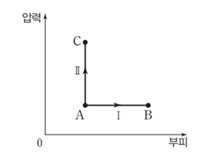

문제:
8. 그림은 일정량의 이상 기체의 상태를 A에서 각각 B, C로 변화시키는 과정 1, 2를 압력과 부피로 나타낸 것이다. 1에서는 압력이, 2에서는 부피가 일정하며, 1, 2에서 이상 기체가 흡수한 열량은 Q로 같다.
이에 대한 설명으로 옳은 것만을 <보기>에서 있는 대로 고르시오.
ㄱ. B와 C에서 이상 기체의 온도는 같다.
ㄴ. 2에서 이상 기체의 내부 에너지 증가량은 Q이다.
ㄷ. 이상 기체가 외부에 한 일은 1에서가 2에서보다 크다.